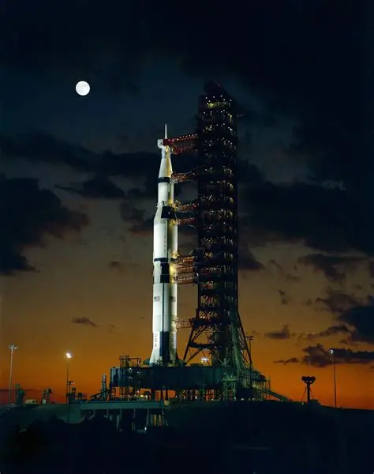
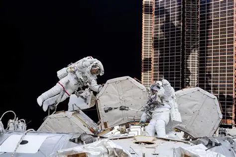
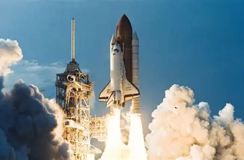
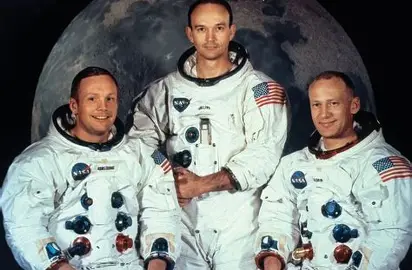
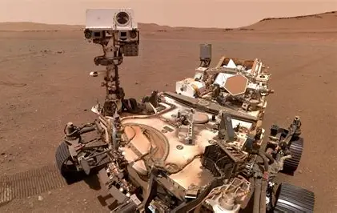
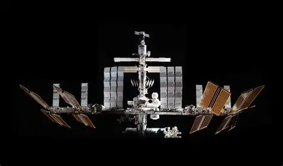

Discover the missions, astronauts, and spacecraft that help humanity explore the Moon, Mars, and beyond.
Space missions are journeys designed to explore Earth, the Moon, other planets, asteroids, and distant regions of space. Some missions carry astronauts, while others use robotic spacecraft that can travel to places humans cannot safely reach. These missions collect images, measurements, and scientific data that help researchers understand the Solar System and the wider universe.
From early satellites to modern robotic probes, every mission has expanded our knowledge and helped scientists develop new technologies for future exploration.


Astronauts are highly trained explorers who travel into space to conduct scientific research, operate spacecraft, and maintain equipment. Before going into space, astronauts spend years training for emergencies, microgravity, spacecraft operations, and scientific experiments.
Living in space presents unique challenges. Astronauts must work in microgravity, follow carefully planned schedules, and adapt to an environment very different from Earth. Their experiences help scientists understand how humans can live and work beyond our planet.
Spacecraft are vehicles and machines designed to travel through space. They include crewed spacecraft, satellites, robotic probes, rovers, and other specialized vehicles. Each one is designed for a particular mission and must survive extreme conditions such as radiation, temperature changes, and the vacuum of space.
Robotic spacecraft have explored planets, moons, asteroids, and comets across the Solar System. Some have traveled far beyond the planets, sending valuable information back to Earth.


On July 20, 1969, Apollo 11 became the first crewed mission to land humans on the Moon. Astronauts Neil Armstrong and Buzz Aldrin walked on the lunar surface while Michael Collins remained in orbit around the Moon.
The Apollo program demonstrated the possibilities of human space exploration and brought back samples of lunar material for scientific study. The missions also provided important information about the Moon and helped shape the future of space exploration.
Mars has become one of the most extensively explored planets beyond Earth. Scientists use orbiters, landers, and rovers to study its surface, atmosphere, climate, and geological history.
Robotic explorers have discovered evidence that Mars once had environments where liquid water existed on its surface. Scientists continue to investigate the planet's past and search for signs that could reveal whether Mars was ever suitable for microbial life.


Space stations are laboratories built to operate in orbit around Earth. They provide astronauts with a place to live and conduct experiments while experiencing microgravity.
The International Space Station has been an important center for scientific research and international cooperation. Experiments conducted in orbit help scientists study biology, physics, medicine, materials, and the effects of long-duration spaceflight.
The future of space exploration will continue to push the boundaries of what humans can accomplish. New spacecraft, advanced robotics, powerful telescopes, and improved life-support systems are being developed to make longer and more distant missions possible.
Future exploration may include returning humans to the Moon, establishing longer-term lunar missions, exploring Mars, and sending robotic spacecraft to even more distant destinations. Each new mission brings humanity closer to understanding the worlds beyond Earth.